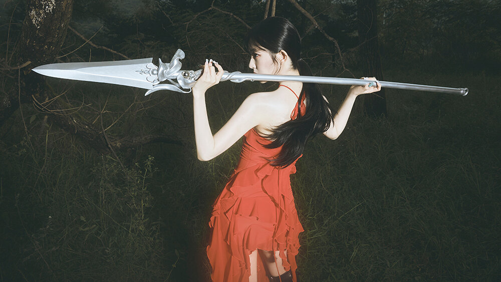
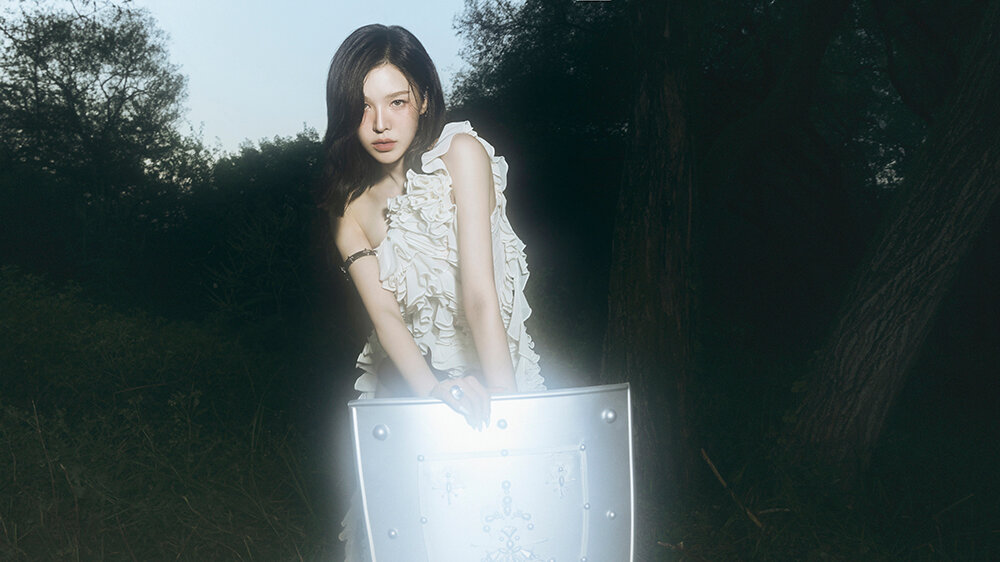
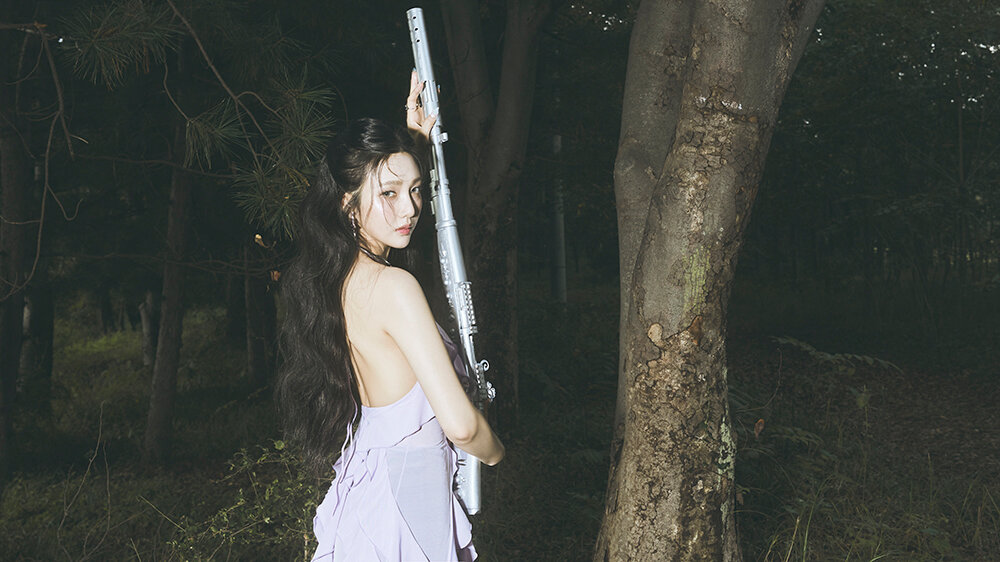
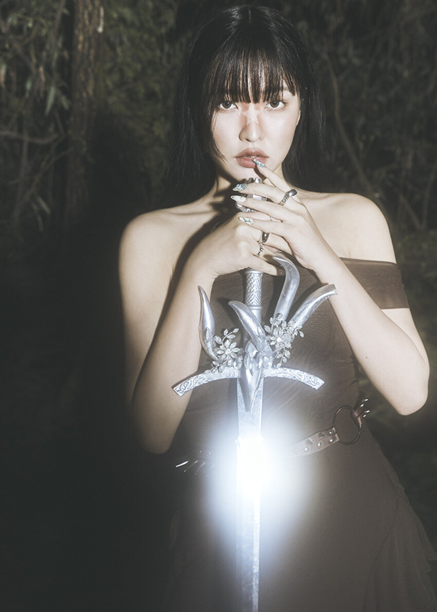

Conheça o RED VELVET

Integrantes

Irene (Bae Joo-hyun)
Líder, Vocalista Principal, Dançarina Principal, Visual e Face do Grupo

Wendy (Son Seung-wan)
Vocalista principal, integrante canadense do grupo.

Seulgi (Kang Seul-gi)
Dançarina principal e vocalista do grupo.

Joy (Park Soo-young)
Vocalista e atriz, também realiza trabalhos como atriz.

Yeri (Kim Ye-rim)
Vocalista e maknae (integrante mais nova) do grupo.
Trecho de chill kill
"Chill Kill" é uma faixa que combina elementos de R&B e pop, com letras que falam sobre a luta interna e a busca por paz em meio ao caos. A produção é suave, com vocais etéreos e uma batida envolvente que convida à reflexão.